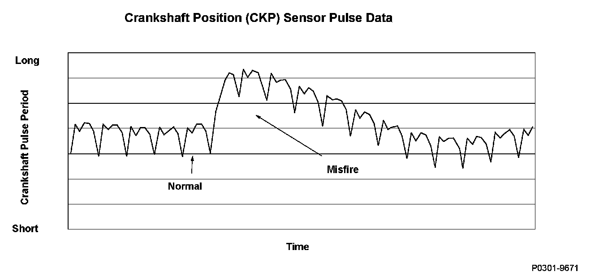
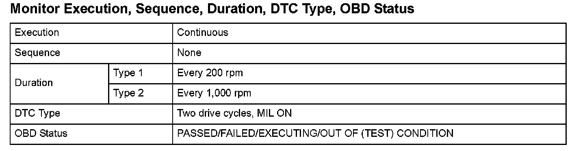
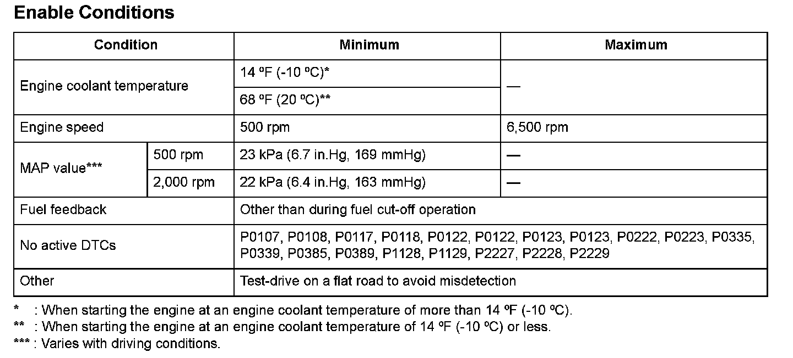
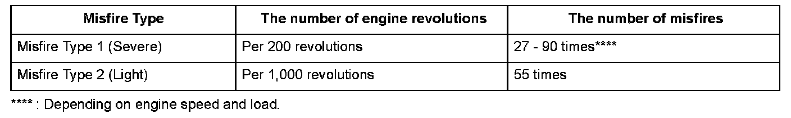
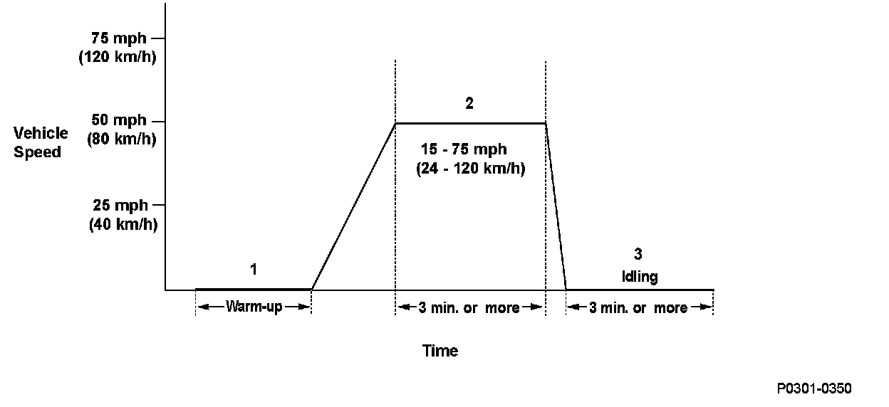

Advanced Diagnostics
DTC P0301: No. 1 Cylinder Misfire DetectedDTC P0302: No. 2 Cylinder Misfire Detected
DTC P0303: No. 3 Cylinder Misfire Detected
DTC P0304: No. 4 Cylinder Misfire Detected
DTC P0305: No. 5 Cylinder Misfire Detected
DTC P0306: No. 6 Cylinder Misfire Detected

General Description
The crankshaft vibrates slightly when each cylinder fires. If a misfire occurs, the crankshaft rotation speed changes rapidly.
The powertrain control module (PCM) monitors engine misfiring based on the output pulses from the crankshaft position (CKP) sensor, counts the number of misfires, and determines which cylinder is misfiring. If a misfire is detected, a DTC is stored.
There are two types of misfire detection.
Type 1 (1 drive cycle): When the number of misfires per 200 engine revolutions reaches the level that damages the three way catalyst (TWC), a DTC is stored and the MIL blinks. When the misfire ceases, the MIL remains on steady instead of blinking.
Type 2 (2 drive cycles): When the number of misfires per 1,000 engine revolutions reaches the level that affects FTP mode exhaust emissions, a DTC is stored and the MIL comes on.

Monitor Execution, Sequence, Duration, DTC Type, OBD Status

Enable Conditions

Malfunction Threshold
The number of misfires versus engine revolutions is equal to or greater than the values in the table.

Driving Pattern
1. Start the engine. Hold the engine speed at 3,000 rpm without load (in Park or neutral) until the radiator fan comes on.
2. Drive the vehicle at a speed between 15 - 75 mph (24 - 120 km/h) for at least 3 minutes.
3. Stop the vehicle, and let the engine idle for at least 3 minutes.
- When freeze frame data is stored, drive the vehicle under those conditions instead of Driving Patterns 2 or 3.
- When you have difficulty duplicating the DTC because of road conditions and traffic situations, repeat the driving pattern several times.
- Drive the vehicle in this manner only if the traffic regulations and ambient conditions allow.
Diagnosis Details
Conditions for illuminating the MIL
Misfire Type 1: Under high rpm or high load conditions: The MIL blinks once per second if a type 1 misfire (catalyst damaging) occurs, and a Temporary DTC is stored. If the type 1 misfire ceases, the MIL goes off. If a type 1 misfire occurs during the next (second) drive cycle, the MIL blinks at the first misfire occurrence, and the DTC and the freeze frame data are stored. The MIL remains on steady if the type 1 misfire ceases.
Under normal driving conditions: The MIL blinks once per second if a type 1 misfire occurs a third time, and a Temporary DTC is stored. If a type 1 misfire occurs during the next (second) drive cycle, the MIL blinks during the third type 1 misfire occurrence, and the DTC and the freeze frame data are stored. If the type 1 misfire ceases, the MIL remains on steady.
Misfire Type 2: When a type 2 misfire (emission-related but not severe enough to immediately damage the TWC) occurs within the first 1,000 engine revolutions after engine start-up, a Temporary DTC is stored. If a type 2 misfire occurs after the first 1,000 engine revolutions after engine start-up, a Temporary DTC is stored during the fourth type 2 misfire occurrence.
If a type 2 misfire occurs during the next (second) drive cycle, the MIL comes on, and the DTC and the freeze frame data are stored.
Conditions for clearing the MIL
The MIL will be cleared if the malfunction does not recur during three consecutive drive cycles in which the engine conditions are similar to the first time the malfunction was detected.
The MIL, the DTC, the Temporary DTC, and the freeze frame data can be cleared by using the scan tool Clear command or by disconnecting the battery.